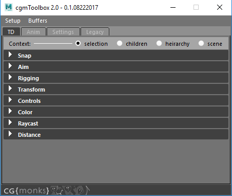
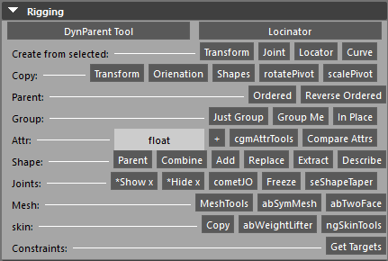
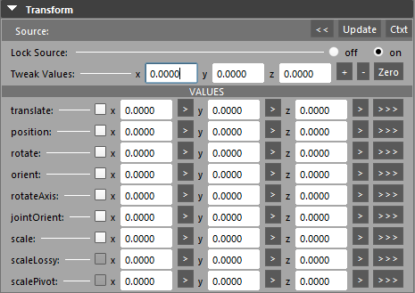
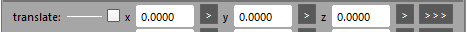
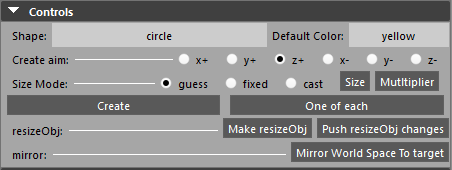
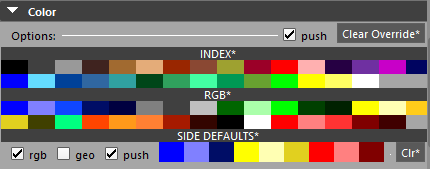
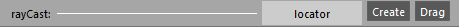
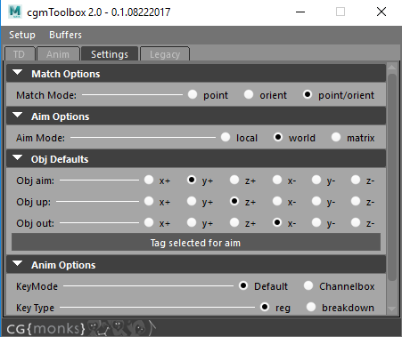

Toolbox¶
Last update: 09.01.2017
The cgmToolbox is a collection of many tools that may be accessed in a several ways:
- Tool Window - The easiest way to access most of the tools is through the main window and be the main part of what we'll be talking about.
- Top menu - We'll be talking about using this method in the next sections
- Marking menu - We'll get to this later or you can LATER
The new top menu was initially released in February 2017. It shares tool libraries with the marking menu so most items available in one are in the other. Menu sections may be torn off for easy access.
Until we get embeded video sorted. Please use this link: https://player.vimeo.com/video/206286478
Access¶
cgmTopMenu>Open Tool Win- You should see what something like the above image- Python
import cgmToolbox
cgmToolbox.ui()
TD Tab¶
This is a collection of tools mainly for doing td and rigging work.
Context
Some tools work with this contextual setup. They are designated in the ui/marking menu/top menu via a *.
selection- Only on selected objectschildren- Selected objects and belowheirarchy- Selected objects and their heirarchiesscene- Everything in the scene. Careful.
Snap¶
Functions for snapping items around. In general, they function on a selection basis with all targeting the last.

Point- To the last selected objectPoint - Closest- To the closest point on the last surface,curve,shapeParent- Position and orientationOrient- rotation onlyRayCast- Uses the rayCast options to detect a point in space
Match Mode¶
Options for how matching matches.
point- Position onlyorient- Orientation onlypoint/orient- Both
Matching¶
If an object is tagged to a cgmMatchTarget, will match the object to the match target. For example, if it is an updatable object, it will update.
Self- Update the selected object to their respective match targetsTarget- Updates the selected's match targets to the selectedBuffer- Update utilizing the match buffer
Arrange¶
Along Line (Even)- Arrange selected along line from frist to last evenlyAlong Line (Spaced)- Arrange selected along a line snapping middle objects to their nearest point on the line
Aim¶
Functions for aiming items around. In general, they function on a selection basis with all targeting the last.

Aim- Currently uses object defaults from Menu. Will take into account object tagging in future.Sel Order- Aim all selected objects in selection order with the last aiming back at the previous oneFirst to Mid- First object aims at the midpoint of the rest of the selectionAimCast- Uses rayCasting to aim selected objects in real time at a point of intersection
Mode¶
local- Use local vector based on object defaults OR stored aiming optionsworld- Use world vectormatrix- IN DEVELOPMENT Bokser is playing around
Object Defaults¶
Because assumptions are often wrong.
Obj Aim- Aim axisObj Up- Up axisObj Out- The local out axis for vector work. Out is rarely used and may be deprecated.
Tag Selected for Aim - Adds attributes to selected objects to make them aimable on their own axis regardless of defaults
Rigging¶
DynParent Tool- details...Locinator- details...
Create from selected¶
Series of options for creating objects from a selection. Works with components as well.
Transform-Joint-Locator- Locators are special. They work based off component selection and are updateable. More on that here...Curve- Instead of per object, creates a curve through selection. Points may be components.
Copy¶
Series or functions for copying this and that in a from>to fashion.
Transform- Copy the position and orientation.Orientation- Only the orientation.Shapes- Any shapes are appended.rotatePivot-scalePivot-
Group¶
Series or functions for grouping selected per selected objects. Groups are created matching the transform of their targets so objects can be zeroed for example. They are also named.
Just Group- Just the groupGroup Me- Group created, objected paretned to said group. Group is in world.In Place- Group created, and inserts itself between target and target's original parent
Attributes¶
[type] +- Creates a ui prompt to add a number of attributes of the selected type. Separate by,.- Left click the type to change.
- Types:
enum,string,int,float,vector,bool,message
[cgmAttrTools]-- page not doneCompare Attrs- Compares the prime node to other selected nodes. That comparison comprising seeing what attributes on the given objects match and which do not. Here's example output:
# cgm.core.lib.attribute_utils : Comparing nurbsSphere2 to nurbsSphere1... #
# cgm.core.lib.attribute_utils : Matching attrs: 199 | Unmatching: 29 #
# cgm.core.lib.attribute_utils : -------------------------------------------------------------------------- #
# cgm.core.lib.attribute_utils : attr: boundingBoxMin... #
# cgm.core.lib.attribute_utils : source: [-4.348416510705419, -1.543820107219151, 0.38805085162276876] #
# cgm.core.lib.attribute_utils : target: [-1.2264094625656805, -1.0, -1.2264094625656803] #
# cgm.core.lib.attribute_utils : attr: boundingBoxMinX... #
# cgm.core.lib.attribute_utils : source: -4.34841651071 #
# cgm.core.lib.attribute_utils : target: -1.22640946257 #
# cgm.core.lib.attribute_utils : attr: boundingBoxMinY... #
# cgm.core.lib.attribute_utils : source: -1.54382010722 #
# cgm.core.lib.attribute_utils : target: -1.0 #
# cgm.core.lib.attribute_utils : attr: boundingBoxMinZ... #
# cgm.core.lib.attribute_utils : source: 0.388050851623 #
# cgm.core.lib.attribute_utils : target: -1.22640946257 #
Control Curves¶
Options for creating control curves from selected objects.
Create Control Curve- Creates a control curve at each selected object utilizing stored create options. See [Toolbox Options](toolboxoptions.md) for more details.One of each- Just a way to create one of every curve type in our libraryMake resizeObj- Create a matching transform and shape from your selected objects so you can cleanly resize and shape without worrying about the rig. When you're done...Push resizeObj changes- Replace the shapes of the original object and delete our resizeObjMirror World Space To Target- Currently only works across world x{Options}- Opens the Option Window
Shape¶
Series of tools for working with shapes. Works with a from>to format.
Parent- Parent shape in place. This is our implementation as we foud maya's not to work well.Combine- Combine the selected shapes to the last transform.Add- Add selected shapes to the last transform.Replace- Replace the last objects shapes with the former onesExtract- Extract a specific shape from a transform. (Works best with outliner - show shapes for easy selectability)Describe- Given a selected nurbs curve, generate the code necessary to recreate it.
Joints¶
*Show x- Show axis (CONTEXTUAL)*Hide x- Hide axis (CONTEXTUAL)cometJO- Tool by the brilliant Michael B. Comet for orienting jointsseShapeTaper- Tool by our good friend Scott Englert for splitting sdk 'poses'
Mesh¶
MeshTools- page not done.abSymMesh- (Brendan Ross) Great tool for working with blendshapesabTwoFace- (Brendan Ross) Tool for splitting blendshapes
Skin¶
Copy- Copy the skinCluster data from first object to othersabWeightLifter- (Brendan Ross) Useful tool for retargeting/moving skinCluster data.ngSkinTools- (NOT INCLUDED) If you have the tool installed, it will launch. Otherwise it'll open the page in a browswer to get it. You should get it.
Constraints¶
Get Targets- Given a selected object with constraints or a constraint, select the targets of the constraints involved
Transform¶
This section/tool is for tweaking and pushing transform data on one node and to others. When Bokser suggested it, it made me think of Lightwave's edtior but it also has a bit of Comet's influence as well.
It may be accessed in the toolbox section or you can launch a separate window via the anim tab transformTools button. It is split into three sections:
- Source - This is where you load your base object with which to work and push values from/to
- Tweak - Relative adding/subtracting values
- Values - A grid of float fields expressing attributes and xform data
Source¶
This is where you load a source object. For editing and pushing values, something must be loaded as the source. It will auto load the first object in your selection on gui intialization or you can do it manually with the <<.
<<- Load first selected object to the sourceUpdate- Update the values section with the source objects current dataCtxt- Probably temp but shows what your active targets are that will be affected by any other buttons- Lock source - When lock source is on, the source object will not be affected by any value changes or pushes
Tweak Values¶
The easiest way to understand this is as a relative value +/- for any of the data rows in values.

x [ ] x [ ] z [ ]- Values to use for add/subtract.0of course does nothing.+- Add to the current value. See Values checkbox explanation for more details.-- Subract from the current valueZero- Rest the value fields and uncheck all tweak check boxes in the values section
Values¶
This section is for absolute value setting where Tweak is for relative. The fields fill based off the source object both on loading a source and when you press the update button.
Let's first look at the format, then each attribute/value type.
- Translate - Simple label expressing what kind of data this row is representing.
[]- Check box that couples with tweak. When you press the + for example in tweak. It checks for any rows with the check box and uses those to see what to tweak.x [ ]- Populates with the given value from attribute or xform data>- Only push this channel to targets>>>- Push all channels to targets
Now to look at what each of these rows is.
- translate - Local translation values
- position - World space position xform data.
- rotate - Local rotation values
- orient - World space rotation xform data
- rotateAxis - Attribute data
- jointOrient - Attribute data (ONLY SHOWS UP FOR JOINTS)
- scale - Local scale data
- scaleLossy - Compound scale data from parents (Not tweakable)
- scalePivot - xform data(not tweakable)
Examples¶
Let' take a look at a couple of examples
If you wanted to add 10 to the world position y value of a selection of objects.
- Select some objects
- Put 10 in the tweak y value field
- Check mark the position row
- Hit the
+on the tweak row
If you wanted to absolutely set the world position y value of a selection of objects
- Select some objects
- Put a 10 in the position row y value field
- Hit the
>next to that field
Controls¶
This section is for working with curve control creation and manipluation.
There are 3 main sections currently.
- Shape creation - Create curve shapes based off of selection
- ResizeObj - Someone we started trying a couple gigs back and find it useful
- Mirror - Still fleshing this out but should be obvious
Shape Creation¶

- Create row - First we have the create type row.
Shape- If you left click this label you can specify the curve create type.Default color- The color created curves will be
- Create Aim - Aim Next we have the create aim. You specify the create objects forward with this to get created curves to snap better. The library of shapes are generally stored as z forward y up.
- Size Mode - How the created curves will be sized
- Guess - Guess based on child distance. Most useful for joints.
- Fixed - Set size. Change via the
sizebutton. - Cast -
NOT IMPLEMENTEDPlan on implementing with our raycasting stuff at some point Size- Change the fixed sizeMultiplier- Couples with Guess. If multiplier * distance to child = size
Create- ...using settings aboveOne of each- Make one of each shape type in our library so you know what they are.
Resize Obj¶

In short the idea here is that if you are given a rig will all kinds of wiring and you want to tweak a control that exists without just replacing the shape which we could use replace. You could of course go to component mode but the pivot for scaling can get wonky. Regardless, in short, this gives you clean shapes of the control in question on a matching transform you can scale, move or do whatever with without messing with the rig. Then you can push those changes back to the control by using our replace call. This just makes it an easy one two step.
Make resizeObj- Makes currently selected objects resize objects. This sets up the connections to handle pushing back changes and what not.Push resizeObj changes- Pushes changes back and cleans up wiring we added
Mirror¶

Pretty sparse for now.
Mirror World Space To Target- Only works across X now. Given two selected curves, mirrors the first to the second. Supports multi shape controls. Wrote this for a recent gig. Need to flesh out more.
Color¶
Not done with this section. Still works for now...
Raycast¶
We use raycasting a lot. These options affect:
- RayCast Snapping
- AimCast
- Raycast object creation in this section
- MeshTools curve casting
You can find more info about it in the corresponding knowledge section.
Buffer¶
When the buffer is inactive, ALL nurbs and poly surfaces in the scene are eligible cast targets. If you want to specify certain cast targets you do it here.

Define- Whatever is selected will now be the bufferAdd Selected- Append to the bufferRemove Selected- ...Report- Report the buffer to the script editorSelect Members- Select the bufferClear- Empty the buffer
Cast¶
This specifies what data is returned for the subsequent mode you're in. Note the objects actually being hit with rays can be specified with the rayCast buffer

close- Only use first impact regardless of mesh hitmid- Mid point of impactsfar- Only far hits.all- All hits.x- Creates a temporary x axis plane to cast aty- Creates a temporary y axis plane to cast atz- Creates a temporary z axis plane to cast at
Offset¶
None- Hit point is the position usedDistance- Fixed instance offset along normal or cast vectorsnapCast- Technique for offsetting created or snapped objects to the impact point by multiple casts. Will explain more later
Orient¶
None- Don't even tryNormal- Orient to the normal
Note
Not thrilled with the orient stuff yet. We'll be revisting or any contributors are welcome to take a stab at it
Set Drag Interval- Creates a uiPrompt to change the value. Drag interval sets how often to register hits during drag mode.Set offset- Creates a uiPrompt to change the value
rayCreate¶
Create objects with rayCasting.
Tip
You can drop rayCasting context with the q key regardless of how you started it (markingMenu, this section, etc.).
[ locator ]- Left click to change what kind of creation object you want- Locator - Locators are created such that they are updateable.
- Joint - Joint at hit point
- Joint Chain - After tool is dropped, chain will be created from locs
- Curve - After tool is dropped
- Duplicate - If you have an object selected, it will be duplicated and snapped according to other options
- vectorLine - Visual representation of raycasting. Creates two linear curves with a start and end point.
CastPoint----->ImpactImpact------->Fixed distance along mesh normal vector
- Data - Just report data in the script editor
Create- Starts a dragContext in which you can click in the viewport to create objects at points of intersection per mouseclickDrag- Same as create but will continue to create as long as the button is pressed and at the interval specified
Distance¶
Requires at least two selected objects to do anything. First object selected is source. Curves, mesh and surfaces are suported. If target objects have multiple shapes, all shapes are checked.

Distance¶
[0.0000]- Float field that is updated when distance is measuredMeasure- Measure the disance between all selected objects, add them, and update the float field to make it easy to copy
Vector¶
x[] y[] z[]- Float fields that is updated when vector is measuredMeasure- Measure the vector between two objects, add them, and update the float field to make it easy to copy
Near¶
Object- Closest object of seleted objects to the first.Shape- Closest shape of selected object's shapes to the first transformSurface Point- Closest point on selected objects...Surface Loc- Closest point loc'd...Surface Nodes- Wired nodes per shape and result loc...
Far¶
Object- Furthest...Shape- ....
Anim Tab¶

Snap Section- Mirrored section from td tab. See more...Aim Section- Mirrored section from td tab. check it out...cgmLocinator- Tool for setting up snapping objects and baking that data while animating. Details...cgmDynParentTool- Tool for setting up space switches. See morecgmTransformTools- Open a separate window with the transform sectionautoTangent- Michael ComettweenMachine- Justin BarrettmlArcTracer- Morgan LoomismlCopyAnim- Morgan LoomismlHold- Morgan Loomisred9.Studio Tools- Setup red9 tools. They are packaged with our tools. Great stuff.
Settings Tab¶
The things in the settings tab iteract with our optionVar setups that most of our tools access. Most of these things are accessible in the marking menu but it's tedious changing settings there. Thus we moved it here.
Match¶
This if for snapping accessed via marking menu or top.
Mode
point- Position onlyorient- Rotation onlypoint/orient- Position and rotation
Aim¶
Mode
local- Use local vector based on object defaults OR stored aiming optionsworld- Use world vectormatrix-IN DEVELOPMENTBokser is playing around
Object Defaults¶
Because assumptions are often wrong.
Obj Aim
The local aim axis for vector work
Obj Up
The local up axis for vector work
Obj Out
The local out axis for vector work. Out is rarely used and may be deprecated.
RayCast¶
Cast
close- Only use first impact regardless of mesh hitmid- Mid point of impactsfar- Only far hits.all- All hits.x- Creates a temporary x axis plane to cast aty- Creates a temporary y axis plane to cast atz- Creates a temporary z axis plane to cast at
Offset
None- Hit point is the position usedDistance- Fixed instance offset along normal or cast vectorsnapCast- Technique for offsetting created or snapped objects to the impact point by multiple casts. Will explain more later
Orient
None- Don't even tryNormal- Orient to the normal
Note
Not thrilled with the orient stuff yet. We'll be revisting or any contributors are welcome to take a stab at it
Set Drag Interval- Creates a uiPrompt to change the value. Drag interval sets how often to register hits during drag mode.Set offset- Creates a uiPrompt to change the value
Anim Options¶
Key ModeDefault- Maya default of keying everything keyableChannelbox- Prioritizes channel box attribute selection so if you have obj1 and obj2 selected and tx selected in the channel box. The following would be keyed: [obj1.tx,obj2.tx]
Key Type- Keys set by default via marking menu can be reg or breakDown typeReset Mode-Default- All keyable attributes will be resetTransform Atts- Only keyable transform attributes will be set:translate,rotate,scale
Legacy Tab¶

Top Menu¶
Should be pretty self explanatory from the sections above. Most of the functions in the tool window are accessible here as well.
Snap¶
Functions for snapping items around. In general, they function on a selection basis with all targeting the last.

Basic¶
Point Closest- To the closest point on the last surface,curve,shapeParent- Position and orientationOrient- rotation onlyAim- Currently uses object defaults from Menu. Will take into account object tagging in future.Aim Special- In the cgmMarkingMenu, if three or more objects are selected splits to subMenu:All to last- All items aim at the lastSelection Order- Each object aims to the nextFirst to Midpoint- First object aims at the midpoint of the rest of the selection
Casting¶
Casting utilizes rayCasting to help position things. Our rayCasting by default casts at all eligible surfaces.
RayCast- Uses the rayCast options to detect a point in spaceAimCast- Uses rayCasting to aim selected objects in real time at a point of intersection
Matching¶
If an object is tagged to a cgmMatchTarget, will match the object to the match target. For example, if it is an updatable object ([Locinator](locinator.md) loc), it will update.
Self- Update the selected object to their respective match targetsTarget- Updates the selected's match targets to the selectedBuffer- Update utilizing the match buffer
Arrange¶
Arrange-Along Line (Even)- Arrange selected along line from frist to last evenlyAlong Line (Spaced)- Arrange selected along a line snapping middle objects to their nearest point on the line
TD¶
Collection of tools for rigging and td work. It will eventually cover all that our legacy tool did and much more.

Select¶
A contextual selection tool. For each option provided you can select objects of the given type. This is a WIP tool, we're unsure how useful it is. Simply an easy call from some other stuff we were doing.
Selection- Work from our current selectionChildren- Check all children of all selected objectsHeirarchy- Check heirarchies of all selected objectsScene- Check entire scene

The options which are pretty self evident. If you clicked TD/Create/Select*/scene/Joints all joints in the scene would be selected.
JointsCurvesMeshSurface
Control Curves¶
Options for creating control curves from selected objects.
Create Control Curve- Creates a control curve at each selected object utilizing stored create options. See [Toolbox Options](toolboxoptions.md) for more details.One of each- Just a way to create one of every curve type in our libraryMake resizeObj- Create a matching transform and shape from your selected objects so you can cleanly resize and shape without worrying about the rig. When you're done...Push resizeObj changes- Replace the shapes of the original object and delete our resizeObjMirror World Space To Target- Currently only works across world x{Options}- Opens the Option Window
Help¶

CGM Docs- Gets you here.Report Issue- Brings up a form on bitbucket for you to report errors. Please see the info in support before submitting.Get Builds- Link to the download location on bitbucket. Working on making this betterVideos- Links to red9 and our vimeo channelsCoding Questions- Visit one of our favorite places - stackoverflowEnviornment Info- See support for details.